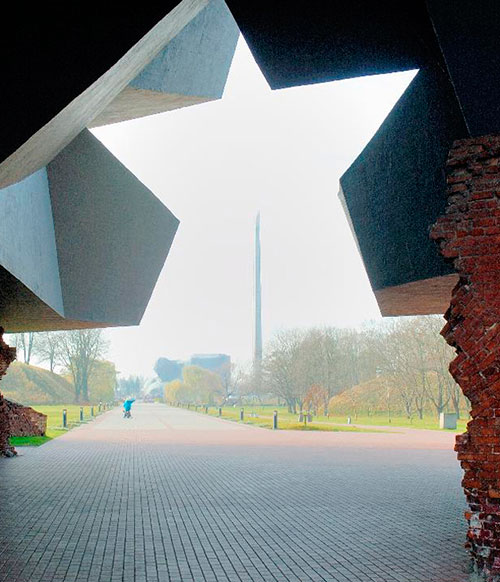

8 мая 1965 года, был подписан указ Президиума Верховного Совета СССР о присвоении Брестской крепости звания “Крепость-герой”. 26 июня 1974 года появился еще один указ — о присвоении Минску звания “Город-герой”. Положенные в таких случаях орден Ленина и медаль “Золотая Звезда” Брестская крепость получила спустя полгода после указа. Минску пришлось ждать наград четыре года.
Торжественное награждение Брестской крепости состоялось в ноябре 1965-го. Оно проходило в Брестском академическом театре драмы. Заведующая научно-экспозиционным отделом музея обороны Брестской крепости Елена Митюкова рассказала, что к церемонии было изготовлено специальное знамя, на которое были прикреплены медаль “Золотая Звезда” и орден Ленина. Ввиду особой ценности медаль хранится в фондах музея. Более десяти лет назад изготовили ее копию из металла, стилизованного под золото. Именно она вместе с оригиналом знамени и настоящим орденом Ленина сегодня представлена в 10-м зале музея обороны Брестской крепости. Минску положенные регалии вручили не сразу. Он уже значился среди городов-героев, местные туристические автобусы с середины 1970-х разъезжали с изображением медали “Золотая Звезда” на борту. Гигантская надпись: “Минск — город-герой” появилась на Привокзальной площади. Но сами награды прибыли сюда только 25 июня 1978 года. Их вручал в Большом театре лично товарищ Л.И. Брежнев. Возраст и пошатнувшееся здоровье генсека давали о себе знать, в Минске он не задержался.
